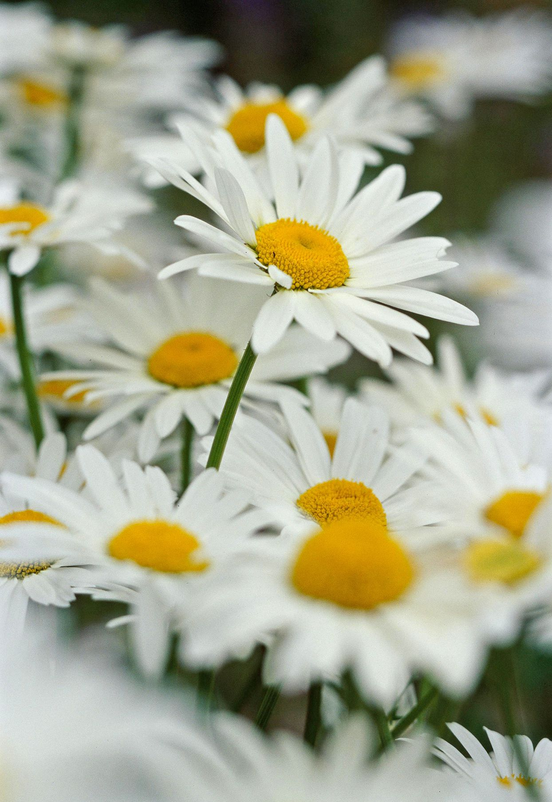

Flower Type 2
This flower is known as a Daisy. Daisies are identified by their white petals and the pistil is a vibrant yellow color. The scientific name for Daisy flowers is Bellis Perennis. They are from a family called Asteraceae.
